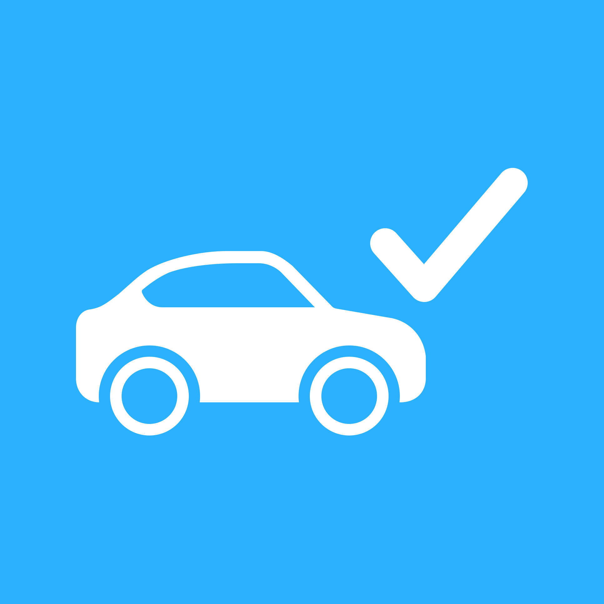

Réseaux de serveurs Minecraft
Participation à plusieurs projets successifs : MantaCraft (2020), devenu DiaphaCraft (2021-2022), LectricMC (2022-2023), Amnesia Network (2022-2024) et Halarix. Configuration, plugins, hébergement et communauté.
/**
* @description Portfolio
* @location Calvados / Caen
*/
Étudiant BUT Informatique · IUT Grand Ouest Normandie
if(visiteur.veutEnSavoirPlus()) {
portfolio.scrollerVersLeBas();
}
Je suis actuellement étudiant en BUT Informatique à Caen. J'aime surtout apprendre en faisant : coder un petit projet, tester une idée, chercher pourquoi quelque chose ne fonctionne pas et finir par trouver une solution.
Je m'intéresse principalement au développement logiciel, mais aussi aux jeux vidéo, aux systèmes et aux bases de données. J'ai eu l'occasion de travailler avec divers languages de programmations et sous différents systèmes d'exploitations notamment en Java, C, Python, SQL, PHP avec Linux et Windows, aussi bien dans le cadre de mes études que sur des projets personnels.
J'ai notamment participé à la création de Mimesis Museum, un jeu réalisé avec deux camarades dans le cadre des Trophées NSI. Le projet a remporté le prix du meilleur projet de Normandie dans la catégorie Terminale.
En parallèle de mes études, j'ai participé à plusieurs projets personnels : des réseaux de serveurs Minecraft, une boutique e-commerce et plus récemment CarnetEntretien, une application Java de suivi automobile. Ces expériences m'ont également sensibilisé à l'hébergement, à l'administration et à la gestion de projets.
Je continue aujourd'hui à développer mes compétences à travers mes études et différents projets, avec l'envie de découvrir de nouvelles technologies et surtout de continuer à créer des choses qui me plaisent.
APPLICATION DE BUREAU · SUIVI D'ENTRETIEN DE VÉHICULE

/* Application de bureau développée en Java pour centraliser le suivi de plusieurs véhicules : informations des véhicules, historique des interventions, dépenses et échéances d'entretien. Le projet m'a permis de travailler sur la conception d'une application complète, son interface JavaFX et la persistance locale des données. */
JEU DE SURVIE · PLUIE DE MÉTÉORITES
/* Jeu interactif développé en Python dans lequel vous devez éviter des météorites. Projet de programmation initié en classe de première générale dans le cadre des trophées NSI */
JEU DE STRATEGIE · ESCAPE GAME
/* Jeu interactif développé en Python dans lequel vous devez tester la sécurité d'un musée. Projet de programmation initié en classe de terminale générale dans le cadre des trophées NSI */
/* Nommé meilleur projet de Normandie du concours trophées NSI dans la catégorie terminale */
APPLICATION DE DESSIN · PAINT LIKE
/* Projet créatif autour du dessin interactif. Projet influencé par Paint */
/* Package généré sous forme d'exécutable Windows (.exe) portable. */
HÉBERGEMENT · VPS · ADMINISTRATION · 2022–2023
Mise en place d'un service de location de serveurs VPS sous le nom Aria-Hosting, destiné à l'hébergement de services et de serveurs de jeux. Ce projet m'a fait travailler sur l'installation et l'administration de serveurs Linux, la mise à disposition de machines à des utilisateurs et la gestion d'un service au quotidien.
Projet mené de 2022 à 2023.
SERVEURS DE JEU · ADMINISTRATION · GESTION DE PROJETS · 2020–2024
Entre 2020 et 2024, j'ai participé à la création et à la gestion de plusieurs réseaux de serveurs Minecraft, où j'ai touché un peu à tout : installation et configuration des serveurs, choix et réglage des plugins, hébergement sur VPS, maintenance, organisation du projet et animation de la communauté.
E-COMMERCE · BOUTIQUE EN LIGNE · 2023–2024
Création et gestion d'une boutique en ligne autour de l'univers du gaming, bâtie sur une plateforme e-commerce. Ce projet m'a permis de découvrir les enjeux d'une boutique : présentation des produits, organisation du catalogue, identité visuelle, parcours d'achat et service client.
Boutique ouverte en octobre 2023 et arrêtée début 2024 : elle n'est plus en ligne.
AU-DELÀ DU CODE
Des projets menés en autonomie sur plusieurs années, entre développement, hébergement, administration et e-commerce.
Participation à plusieurs projets successifs : MantaCraft (2020), devenu DiaphaCraft (2021-2022), LectricMC (2022-2023), Amnesia Network (2022-2024) et Halarix. Configuration, plugins, hébergement et communauté.
Mise en place d'un service de location de serveurs VPS sous le nom Aria-Hosting, notamment pour l'hébergement de services et de serveurs de jeux.
Création et gestion d'une boutique e-commerce autour de l'univers du gaming, à l'aide d'une plateforme spécialisée.